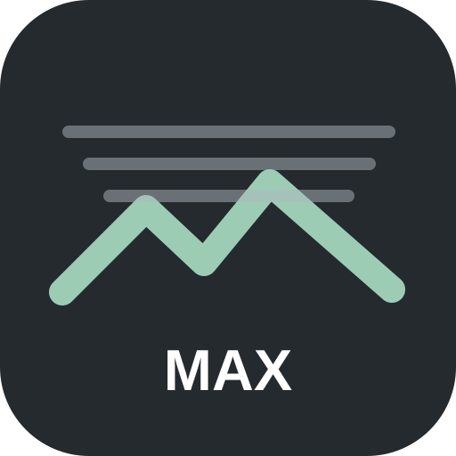

ОРИГІНАЛ
АНТИТУМАН
Меті Туман VIDEO MAX
LIVE MAX: DCP + guided filter + CLAHE на відео. Камера та локальне відео з антитуманом. Один застосунок для iPhone, Android, планшета й комп'ютера.

Меті Туман VIDEO MAXLIVE MAX: DCP + guided filter + CLAHE на відео. Камера та локальне відео з антитуманом. Один застосунок для iPhone, Android, планшета й комп'ютера.